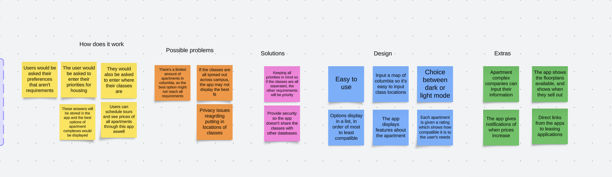
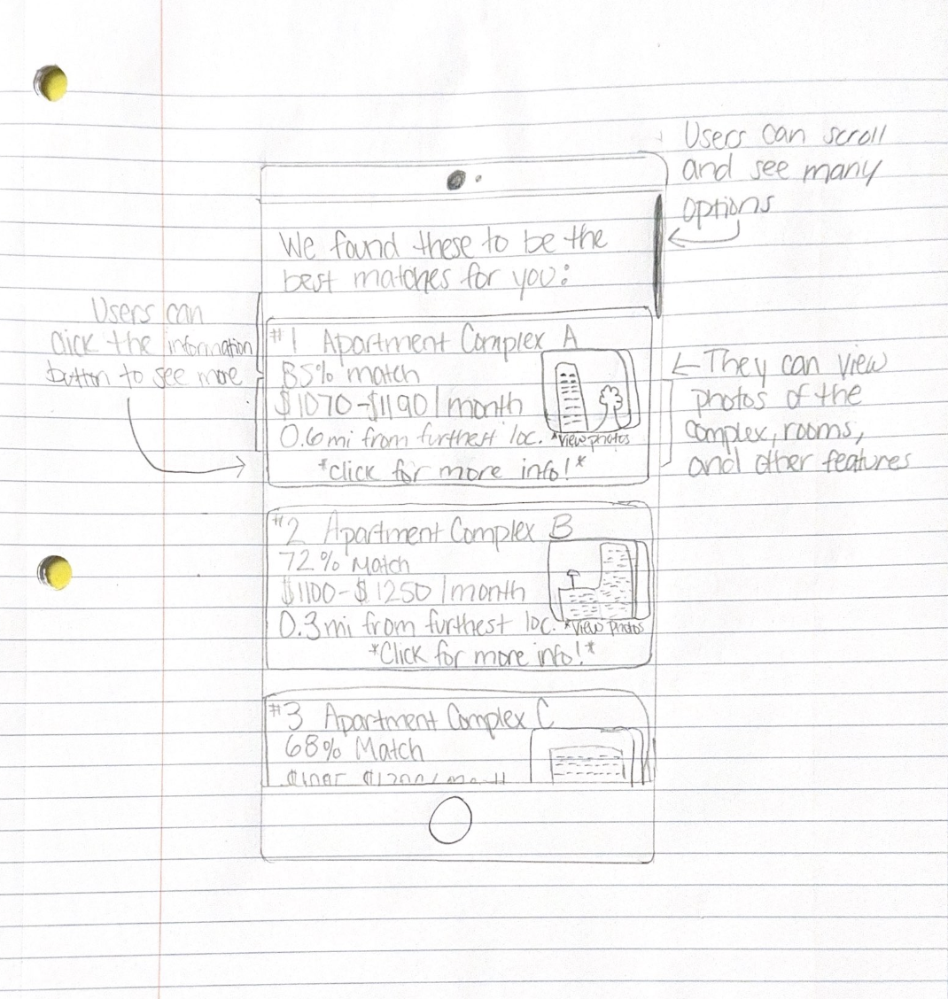
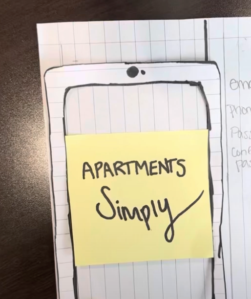

Highlighted projects
Problem Statement

Freshman students find it difficult to decide on off campus housing for sophomore year which would be most appropriate for their needs. An app that can help sort options for users would aid with this problem.
Affinity Diagram
This affinity diagram explains how the app would function and the different features it has to help people looking for apartments.
Sketches
These sketches provide a visual representation of how the app would function. Additionally, they show the app's capabilities.
Prototype
This is a video prototpye describing how the app would work. By using detailed desrcriptions, users are able to see how to go through the app efficiently.